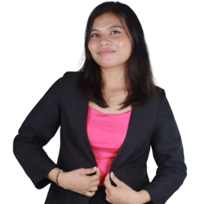

Myra Hazel H. Osman
For Governor

Academic Credentials
- Valedictorian, Kawit Elementary School (2017–2018)
- Valedictorian, Junior High School Department – Zamboanga del Sur School of Arts and Trades (2021–2022)
- Salutatorian, Saint Columban College – Senior High School (2023–2024)
- Top 2 Overall Dean’s Lister, CTEAS – Saint Columban College (Three Consecutive Semesters)
Extra-Curricular
- Campus Journalist (2017–2024)
- Editor-in-Chief, Sidlak – Kawit Elementary School (2017–2018)
- Associate Editor-in-Chief, Ang Panday – Zamboanga del Sur School of Arts and Trades (2019–2020)
- Editorial Writer, Ang Hiraya – Saint Columban College Senior High School (2023–2024)
- Best Speaker, HUMSS Day Debate – Saint Columban College Senior High School (2022–2024)
- Debate Champion, CTEAS Hugyaw – Saint Columban College (2024)
- Tagisan ng Talino Champion, Buwan ng Lahi – Saint Columban College (2025)
- Department Representative, Padula Debate Competition – CTEAS, Saint Columban College (2025)
Leadership & Service
- President, Supreme Pupil Government – Kawit Elementary School (2017–2018)
- Grade 8–10 Representative, Zamboanga del Sur School of Arts and Trades
- Grade 11 Representative, LEADERATO Club – Saint Columban College Senior High School (2022–2023)
- HUMSS Governor, Saint Columban College Senior High School (2023–2024)
- Legislative President, Saint Columban College Senior High School (2023–2024)
- Organizer, Anti-Bullying Community Outreach Program – Nazareth Elementary School
- Volunteer, Stray Animal Feeding Program
- St. Teresa of Calcutta Service Awardee
- First Year Representative, Psychology Major Society – Saint Columban College (2024–2025)
- Vice President for External Affairs, Psychology Major Society – Saint Columban College (2025–2026)
Kwyne Khurstein Tagaylo
For Vice Governor

Academic Credentials
- Camp Abelon Elementary School — Elementary Graduate and Honors
- Pagadian Capitol College Grade 10 Loyalty Awardee
- Pagadian Capitol College Junior High School Graduate and Honors
- Saint Columban College Humanities and Social Sciences (HUMSS) Graduate
- Saint Theresa of Calcutta Awardee
- Saint Michael the Archangel Awardee
Extra-Curricular
- Facilitated / Participated (2025-2026):
- Hugyaw Taga Patag Mass Dance Committee 2025, Outreach Survey — Tina 2025, Dumalinao,
- PSYMS Pinning Ceremony 2025 Facilitator, PSYMS Hair Donation Drive Facilitator
- Events Hosted:
- Hugyaw Music Night 2024, Padula 2025 Opening,
- JPIA Fest 2025 Opening, and Larong Pinoy Tabo 2026
- Events Organized / Facilitated (2023–2025):
- Talidhay 2023, Padula 2023, UnitMeet 2023, Panagdait Festival 2023,
- English Month Festival 2023, HUMSS Day 2024, Orgs Fair 2024, Pag Abi-Abi 2024, Buwan ng Lahi 2024,
- Himamat 2024, Padula 2024, Panagdait Festival 2024, CEAP PDS 2024, Talidhay 2025, HUMSS Day 2025, Orgs Fair 2025
- Outreaches:
- PurrPose Collaboration with Grand Student Council (2023–2024), Women City Jail Outreach, Career Guidance Outreach — Baloyboan,
- Christmas Outreach — Baloyboan, Beach Clean-Up — Barangay White Beach

Leadership & Service
- Grade 7 Class President
- Supreme Student Government Grade 7 Representative (2020–2021)
- Supreme Student Government Auditor (2022–2023)
- Senior Student Council HUMSS Secretary (2023–2024)
- Senior Student Council Vice President (2024–2025)
- Founder (Emeritus) – Special Patrol Unit
- Special Patrol Unit Executive Director (2024–2025)
- Executive Officer – National Disaster Risk Reduction Management SCC Council (2024–2025)
- Psychology Majors Society 1st Year Representative (2025–2026)
- The Masters of Ceremonies Rooster
- Tuburan Youth Rising Advocate (TYRA) Youth Focal